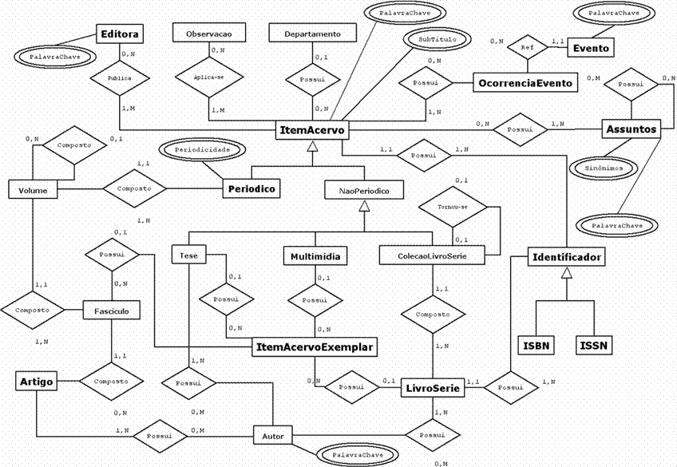

|
Módulo Acervo
|
|
O
módulo de Acervo é responsável por representar os dados de cada item de
acervo existente na biblioteca e também prover métodos de manipulação
destes dados.
Os itens do acervo estão divididos em dois grandes grupos: Periódicos e Não-Periódicos.
O primeiro representa a abstração dos itens que são publicados em
períodos regulares de tempo, como revistas, jornais, etc. Já os Não-Periódicos incluem os itens como os livros, teses e materiais multimídias.
Para cada instância concreta de um
item de acervo da biblioteca, temos um (ou mais) item de Exemplar
associado. É o exemplar que representa a existência física do item na
biblioteca e é ele quem pode ser emprestado, consultado e disposto em
prateleiras.
Assim como ocorreu
no módulo Pessoa, o modelo conceitual do Acervo apresenta uma grande
estrutura hierárquica (figura 1).
Os modelos lógicos e físico do
módulo de Acervo são bastante complexos e extensos, por este motivo,
não puderam ser incluídos neste página, mas estão disponíveis em http://malariadb.ime.usp.br/mac439/projetobiblioteca/modelos.
Embora não esteja representado no modelo conceitual, na biblioteca um CUTTER
é associado a cada item de acervo, livro, série e evento. A tabela de
cutter contém valores pré-definidos e que são associados a cada
entidade citada através das primeiras letras do título de cada item da
entidade. Como livros e séries possuem atributos praticamente
semelhantes, optou-se por representá-los através de uma mesma entidade
no modelo, nomeada LIVRO_SERIE.
Pelo modelo conceitual, vemos que
um livro ou uma série está sempre dentro de uma coleção -
independentemente desta coleção possuir mais de um item ou um item
único. Quando a coleção de livro ou série possuir um único item,
ocorrerá a replicação das entradas em IDENTIFICADORassociadas à coleção em ITEM_ACERVO (ISBN/ISSN), de modo que elas também sejam associadas à tabela LIVRO_SERIE.
|

Figura 1 – Modelo Conceitual do Módulo Acervo
|
Assuntos Remissivos ou Sinônimos
|
|
Cada
assunto, com um código, pode possuir sinônimos, também chamados de
assuntos remissivos. Um determinado assunto e seus remissivos possuem o
mesmo código, porém, para efeito de classificação, somente um sinônimo
é utilizado. Por exemplo, pode-se ter os assuntos "Algoritmos de
Scheduling" e "Algoritmos de Escalonamento", onde o primeiro é
utilizado em uma classificação, portanto recebe um código, e o segundo
é seu remissivo ou sinônimo. Os remissivos sempre remetem ao principal.
|
| Código |
Assunto |
|
| 450 | Algoritmo de Scheduling | Usado na classificação de itens de acervo |
| 450 | Algoritmo de Escalonamento | Remissivo (sinônimo) |
|
Tabelas de Tipos do Módulo
|
|
Assim
como ocorreu em Pessoa, há uma série de tabelas de tipo que definem os
valores que determinados atributos das entidades do módulo podem
assumir. A entidade Exemplar possui dois atributos – situação e
apresentação – que tem os seus valores limitados aos exibidos nas
tabelas 13 e 14, respectivamente. A entidade LivroSerie possui um atributo tipo que deve ser mapeado para um dos valores de tp_livro_serie (tabela 15); o atributo grau da entidade Tese pode assumir um dos valores exibidos na tabela 16 e o tipo de mídia que uma instância da entidade Multimídia pode possuir está na tabela 17.
|
| tp_situacao |
| id_tp_situacao | tipo_situacao |
| 1 | Disponível |
| 2 | Insdisponível |
| 3 | Perdido |
| 4 | Extraviado |
Tabela 13: Tipos de situação na qual um exemplar pode se encontrar
|
| tp_apresentacao |
| id_tp_apresentacao | tipo_apresentacao |
| 1 | Brochura |
| 2 | Espiral |
| 3 | Capa Dura |
| 4 | Encadernado |
Tabela 14: Tipos de apresentação para um exemplar
|
| tp_livro_serie |
| id_tp_livro_serie | tipo_livro_serie |
| 1 | Dissertação |
| 2 | Monografia |
| 3 | Séries Brasileiras |
Tabela 15: Tipos de livros ou séries
|
| grau |
| id_grau | nome |
| 1 | Mestrado |
| 2 | Doutorado |
Tabela 16: Tipos de grau para dissertações
|
| tp_midia |
| id_tp_midia | tipo_midia |
| 1 | CD |
| 2 | K7 |
| 3 | DVD |
Tabela 17: Tipos de mídias
|
Há
ainda os tipos de destaque (tabela 16) que um item pode ter ter na
ficha de consulta impressa. Estes tipos de destaque são geralmente
associados aos relacionamentos entre autores e item de acervo, editoras
e item de acervo ou ainda assuntos e item de acervo.
|
| tp_destaque |
| id_tp_destaque | tipo_destaque |
| 1 | Corpo da Ficha |
| 2 | Aparece em Ambos |
| 3 | Não Aparece |
| 4 | Parte do Título |
| 5 | Segundo Título |
Tabela 18: Tipos de destaque de um item na ficha impressa
|
|
A modelagem de dados de acervo
apresentada nesta página é uma evolução da modelagem inicialmente
proposta nos trabalhos dos alunos:
- Giuliano R. Lima, Givanildo D. Alves, Luiz Henrique M. de Araújo, Renato M. Miyasaki, Renato Senda e Tae Ha Lee, no ano de 2004.
- Luiz Fernando dos Santos Pereira, Cesar Fernando Aguena, Vinicius Bellino, Daniela Akizuki, Guilherme Lungarzo, no ano de 2003.
|